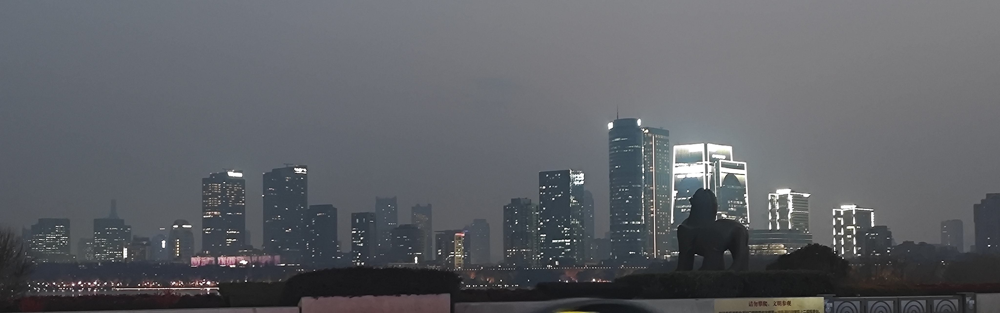
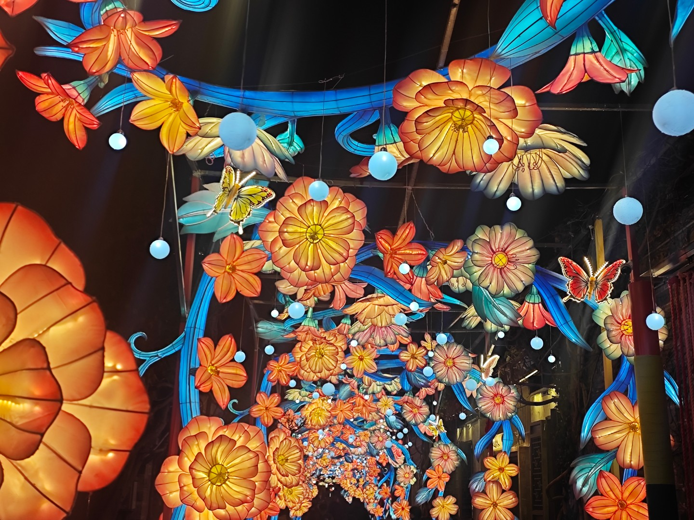

{{ article.date }}
{{ article.title }}
{{ article.summary }}
{{ article.content }}
点击进入
我是Leafer,生理性别男，心理性别男
05年大专生，半拉工科人，软工牛马，也许在"努力"转本,intp-a(?)。qq:2556205521(请注明原因~)。
没有什么爱好，至少目前实在想不出什么爱好。
有一台自己亲手拼成的台式，没有RGB灯带没有高端配件，完全的廉政机箱(笑)。
![[机箱图一]](me/case1.jpg)
MY PC . 01
![[机箱图二]](me/case2.jpg)
MY PC . 02
有时也会玩点小游戏，但实际电子ed，目前肉鸽优先，以撒1000小时小登，尖塔入坑中。沙盒其次，minecraft，泰拉瑞亚都有接触;也是淡坑音游壬，maimaidx w54，musedush，osu等等。
fps老薯条，市面上较火的fps都玩过，战地系列涉及较多，也是专业载具狗，kd维持在3左右，愿意带带薯条也是可以的

MAI . 01
二游玩的不多，但是是月记结晶粉,入坑边巴后了解了月记三部曲，有时候会改点vrc月记小模型(技术力极低)。

projectmoon . 01
挺爱摄影，尤其风景照，被单反的价格劝退只能用手机拍点全损照片，摄影技术较烂勿喷。

PIC . 01

PIC . 02

PIC . 03
高强度网络冲浪，古今往来热门梗基本都知道，唐梗新梗都不落，完全无雷。嘴较毒蛇，心较腹黑，道德感上下横跳。
情绪极其稳定，情商其实挺高但一般不展露，对人生意义和自我情绪的研究较多，对一些社会现象也有些许了解,有想法和见解随时和我交流。
歌单内充满了日本流行曲，主推amazarashi，偶尔听术曲音游曲，早期的国内金曲也有涉猎，
"你能找到这里，说明你是从VRC看到了我的博客链接~这只是个github提供的静态网页部署界面，也许我将在以后拥有服务器之后推出评论功能。这是个游戏，对一些人来说也是第二人生。"
{{ item.content }}
{{ article.summary }}